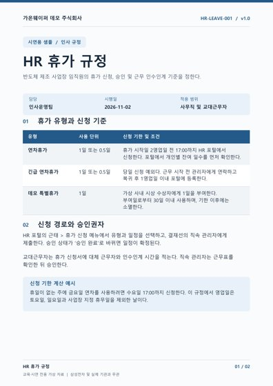
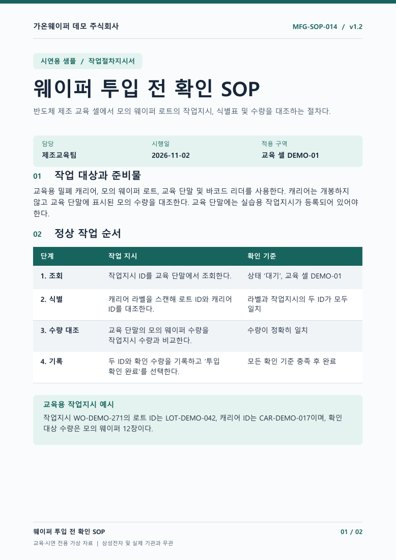
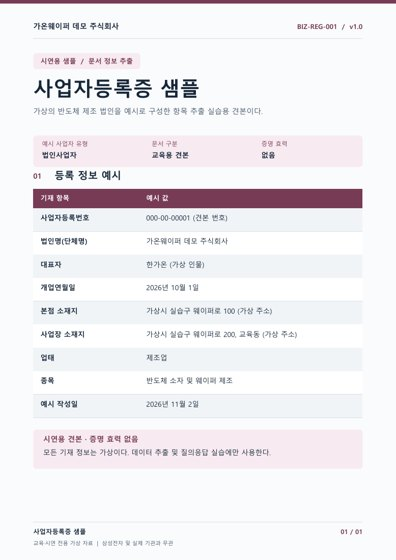
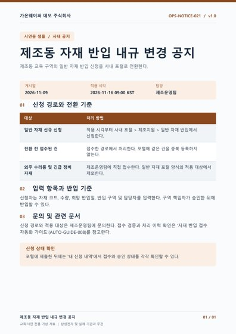
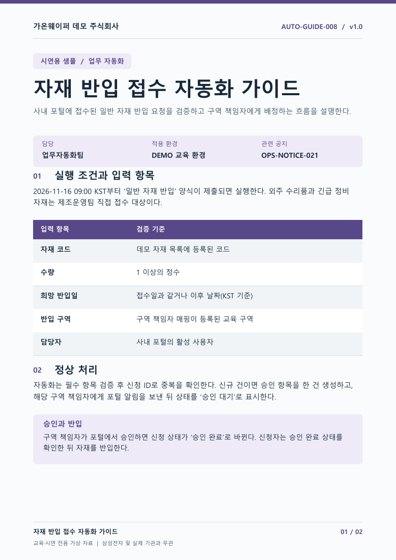

ENTERPRISE KNOWLEDGE / SAMPLE DOCUMENTS
샘플 문서
실습에 사용할 PDF 5개입니다. 문서를 열어 내용을 확인하거나 다운로드한 뒤 실습에 사용하세요.
모든 문서는 교육·시연용 가상 자료입니다. 삼성전자 및 실제 기관의 규정이나 증명서가 아닙니다.

SAMPLE 01 · PDF · 2쪽 · 88 KB
HR 휴가 규정
휴가 유형, 신청·승인 절차와 예외 처리 기준
01_HR_Vacation.pdf

SAMPLE 02 · PDF · 2쪽 · 87 KB
웨이퍼 투입 전 확인 SOP
작업지시·식별표·수량 대조와 이상 발생 시 처리 절차
02_Manufacture_SOP.pdf

SAMPLE 03 · PDF · 1쪽 · 68 KB
사업자등록증 샘플
가상 법인의 등록 항목을 추출하는 실습용 견본
03_BusinessRegistration.pdf

SAMPLE 04 · PDF · 1쪽 · 74 KB
자재 반입 내규 변경 공지
신청 경로 전환 시점, 적용 대상과 반입 기준
04_Compliance.pdf

SAMPLE 05 · PDF · 2쪽 · 99 KB
자재 반입 접수 자동화 가이드
입력 검증, 승인 배정, 오류 처리와 운영 이력
05_AutomationGuide.pdf